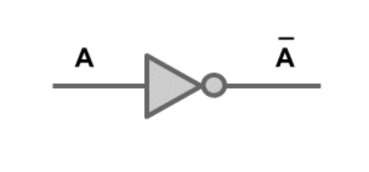
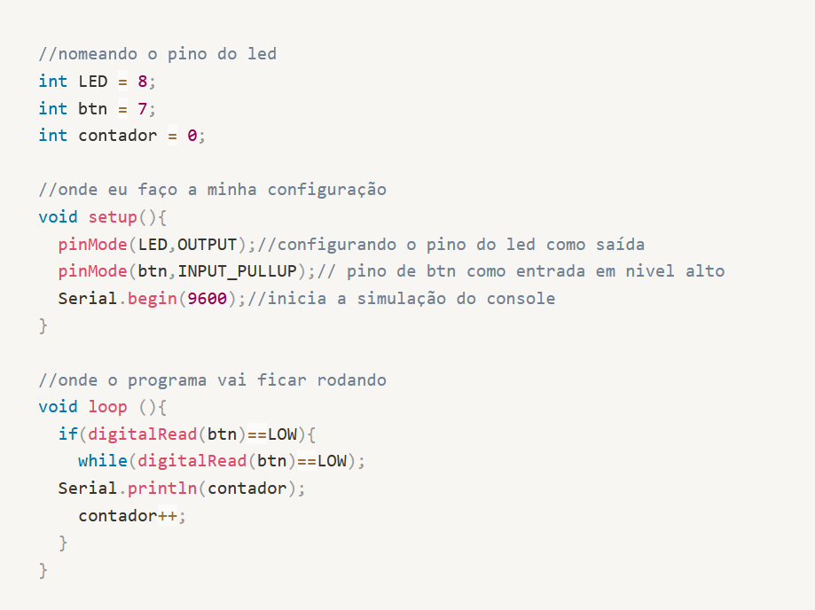

Porta lógica AND (E):
Utilizam-se do operador de produto lógico: a saída é igual a 1 se todas as entradas forem 1.
Se ao menos uma entrada for 0, a saída será 0.
ex: 1 X 0 = 0 ; 1 X 1 =1
Porta AND
Porta lógica OR (OU)
Utiliza-se do operador de soma lógica, a saída é igual a 1 se ao menos 1 das entradas forem 1 e a saída será 0 se todas as entradas forem 0.
ex: 1 + 0 = 1; 1 + 1 = 1; 0 + 0 =0
Porta OR
Porta lógica NOT (NÃO)
Utiliza o operador de inversão. Para um determinado valor na entrada, a saída possui um valor contrário ao da entrada.
Se a entrada for 1, a saída será 0. Se a entrada for 0, a saída será 1

Porta NOT
Microcontroladores
Aprendemos a programar na linguagem C, com arduíno. Fazendo também alguns projetos, como o contador e o desafio do semáforo.

Código do contador
Arduíno no TinkerCad
Sensores Ultrassônicos
Os sensores ultrassônicos são dispositivos incríveis que usam ondas sonoras de alta frequência para detectar objetos e medir distâncias com precisão. Eles são como os olhos eletrônicos do mundo, permitindo que máquinas e robôs "vejam" o que está ao seu redor.
Esses pequenos dispositivos são compostos por um emissor e um receptor de ultrassom. O emissor emite pulsos de ondas sonoras de alta frequência, que se propagam pelo ar ou outro meio. Quando essas ondas encontram um objeto, elas são refletidas de volta para o sensor.
O receptor do sensor ultrassônico capta as ondas sonoras refletidas e mede o tempo que leva para que elas retornem. Com base no tempo de retorno e na velocidade conhecida do som, o sensor calcula a distância até o objeto com uma precisão impressionante.
Os sensores ultrassônicos são amplamente utilizados em diversas aplicações. Em robótica, por exemplo, eles permitem que robôs evitem obstáculos e naveguem em ambientes complexos de forma autônoma. Eles são usados em sistemas de segurança para detectar a presença de intrusos ou objetos indesejados.
Robótica
No mundo dos robôs, onde a imaginação encontra a realidade, máquinas incríveis ganham vida e desvendam um universo de possibilidades. Desde os pequenos autômatos até os imponentes androides, cada robô possui uma personalidade única e uma missão específica.
Em uma cidade futurista, onde arranha-céus se entrelaçam com a tecnologia avançada, os robôs são tão comuns quanto os seres humanos. Eles caminham pelas ruas com passos precisos, realizando tarefas diárias e ajudando a construir um futuro melhor.
Os robôs operam em diversos campos, desde a medicina até a indústria, passando pela exploração espacial e pela inteligência artificial. São projetados para superar limitações humanas, executando tarefas com precisão, rapidez e eficiência incomparáveis.
Em laboratórios de última geração, cientistas trabalham incansavelmente para aprimorar a tecnologia robótica. Eles criam robôs capazes de aprender e se adaptar ao ambiente, dotados de sensores avançados e algoritmos complexos que os permitem interagir com o mundo ao seu redor.
.svg)